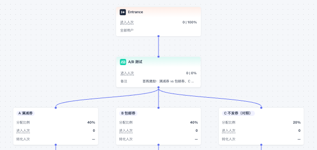
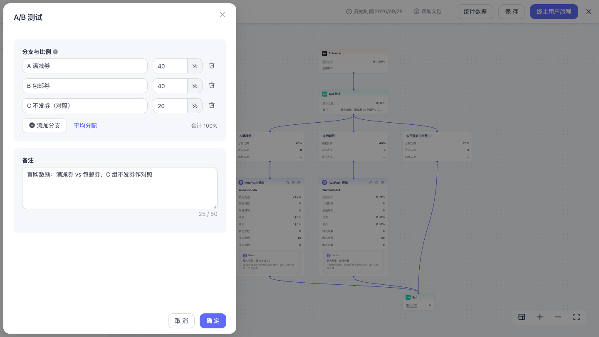

功能预览
旅程 A/B 测试
在同一条用户旅程中，按设定比例将用户分配到不同分支，比较消息内容、触达渠道、发送时机或整条后续路径的效果，再根据数据调整后续用户的分配比例。
本功能即将推出。功能开放时间及最终界面以正式上线为准。
适用场景
| 想了解的问题 | 旅程搭建示例 |
|---|---|
| 哪种内容效果更好？ | 分支 A 发送优惠券文案，分支 B 发送免运费文案。 |
| 哪种触达方式更有效？ | 分支 A 发送 App Push，分支 B 发送 Email。 |
| 多触点是否优于单触点？ | 分支 A 只发送一条消息，分支 B 在等待后追加一条消息。 |
| 发消息是否比不发更有效？ | 一个分支发送消息，另一个分支直接连接结束组件。 |
分支可以连接旅程现有组件，不限于单条消息；无需单独创建多条旅程来比较不同方案。

如何配置
- 在用户旅程画布中，从「操作」组件中添加 A/B 测试。
- 设置分支名称和分配比例。一个组件支持 2–10 个分支，默认两个分支各占 50%；各分支比例之和须为 100%。
- 为每个分支连接后续组件，并确保每条路径最终连接到结束组件。不需要发送消息的分支可直接连接结束组件。
- 如需比较转化效果，在旅程中配置转化统计及转化截止期；如需比较收入，配置收入统计。A/B 测试沿用旅程的统计条件，无需为每个分支重复配置。
- 检查配置并发布旅程。首次发布时，每个分支的比例都须大于 0%。

同一用户多次到达同一个 A/B 测试组件时，在分配比例不变的情况下会进入同一分支；不同 A/B 测试组件分别分配。
运行中调整比例
旅程运行后，您可以修改分支名称和比例，但不能增加或删除分支。将某个分支设为 100%、其他分支设为 0%，即可让此后到达的用户只走该分支。调整只影响后续到达，不会让已进入分支的用户改走其他路径；如果用户之后再次到达组件，比例变化可能改变其分支归属。
建议：对比期间尽量保持分配比例稳定。决定采用哪个方案后，再调整比例；历史数据不会因调整而重新开始统计。
查看测试结果
旅程运行后，可以在画布上查看各分支累计的进入和转化数据，也可以进入旅程的数据统计 → A/B 测试页签查看详情：
- 选择 A/B 测试组件和分支，按日期范围查看趋势与汇总；支持按天或小时查看明细。
- 对比各分支的进入、转化、转化率，以及已配置的收入指标；可导出详细数据。
- 默认按人次查看，也可切换为按人数查看。同一用户在所选范围内多次进入时，按人次记录每次进入，按人数去重计算。
指标如何计算
| 指标 | 含义 |
|---|---|
| 进入人次 | 用户每到达一次 A/B 测试组件，计入所走分支 1 次。 |
| 转化人次 | 用户到达后，在旅程设置的转化截止期内完成转化，计入该次到达所在分支；同一次到达最多计 1 次转化。 |
| 转化率 | 转化人次 ÷ 进入人次；切换到按人数时，使用转化人数 ÷ 进入人数。 |
| 收入次数与收入金额 | 在统计窗口内，归属该次到达的每笔收入事件均计入；金额为这些收入的合计。 |
如果同一用户再次到达组件，会产生新的一次进入。后续转化或收入归属到事件发生前最近一次到达所在的分支，不会同时计入该组件的两次到达。按人数查看时，同一用户在所选范围内去重；收入金额不会因切换查看方式而改变。
日期说明：进入、归属该次进入的转化和收入均按到达日期展示。因此，最近几天的转化和收入可能随着转化截止期内的新事件继续增加。
与消息统计的区别：A/B 测试衡量的是用户进入某个分支后的效果，即使该分支没有发送消息，也可以观察其转化；消息组件的数据用于查看具体消息的发送与互动表现。两处转化的归属方式不同，数值不一定相同。
使用建议
- 在开始测试前确定主要比较目标，并保证各分支使用同一套旅程转化条件。
- 对比不同渠道时，优先查看转化和收入；不同渠道的打开或点击指标不宜直接比较。
- 观察完整转化截止期后再判断结果，避免将仍在产生转化的新近进入用户误判为未转化。
- 若测试过程中调整了比例或分支内容，解读汇总数据时请考虑调整前后的差异。